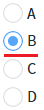
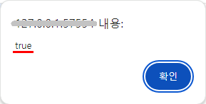
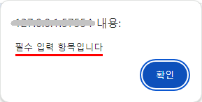
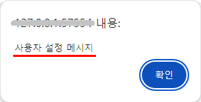
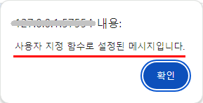
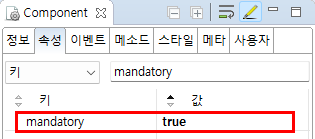
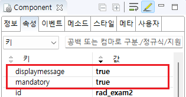
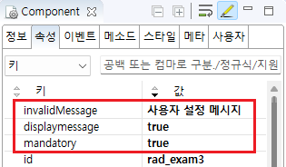
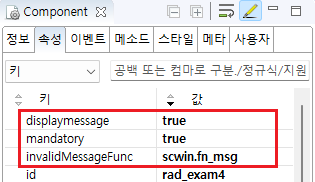

[Radio] 선택한 데이터를 검증하기
1개요
Radio에서 선택된 데이터를 검증할 수 있는 속성과 메소드를 사용한 예제입니다.
이 예제는 아래의 속성과 메소드를 사용하였습니다.
mandatory: (속성)'true'로 설정하면 validate 메소드에서 검증을 수행하여 입력 값이 없을 때 false를 반환
displaymessage: (속성)검증 실패 시 Engine 내부에 정의된 메시지 표시
invalidMessage: (속성)검증 결과가 실패일 경우, 속성에 지정한 값을 메시지 표시
invalidMessageFunc: (속성)검증 결과가 실패일 경우, 사용자 지정 메소드 반환
validate: (메소드)컴포넌트의 유효성 관련 속성값을 통해 유효성 검사를 실행
2구현된 기능
체크 여부 판단하기
지정된 메시지 표시하기
사용자 설정 메시지 표시하기
사용자 지정 메소드로 설정한 메시지 표시하기
3예제 테스트 방법
3.1체크 여부 판단하기
예제 영역 '체크 여부 판단하기'에서 테스트합니다.1
STEP 1: '체크 여부 판단하기' 버튼을 클릭합니다.
선택된 항목이 없는 상태입니다.
Image 1.브라우저(Chrome) 실행 예시

2
STEP 2: 실행 결과를 확인합니다.
브라우저 메시지 창에 'false'가 표시됩니다.
Image 2.브라우저(Chrome) 실행 예시
3
STEP 3: 항목을 선택합니다.
'B' 항목을 선택합니다.
Image 3.브라우저(Chrome) 실행 예시

4
STEP 4: '체크 여부 판단하기' 버튼을 클릭합니다.
5
STEP 5: 실행 결과를 확인합니다.
브라우저 메시지 창에 'true'가 표시됩니다.
Image 4.브라우저(Chrome) 실행 예시

3.2지정된 메시지 표시하기
예제 영역 '지정된 메시지 표시하기'에서 테스트합니다.1
STEP 1: '지정된 메시지 표시하기' 버튼을 클릭합니다.
선택된 항목이 없는 상태입니다.
Image 5.브라우저(Chrome) 실행 예시
2
STEP 2: 실행 결과를 확인합니다.
브라우저 메시지 창에 '필수 입력 항목입니다'가 표시됩니다.
(이 메시지는 웹스퀘어에서 정의된 문자열입니다.)
Image 6.브라우저(Chrome) 실행 예시

3
STEP 3: 항목을 선택합니다.
'B' 항목을 선택합니다.
Image 7.브라우저(Chrome) 실행 예시
4
STEP 4: '지정된 메시지 표시하기' 버튼을 클릭합니다.
5
STEP 5: 실행 결과를 확인합니다.
메시지가 표시되지 않습니다.
(선택된 항목이 있으면 메시지가 표시되지 않습니다.)
3.3사용자 설정 메시지 표시하기
예제 영역 '사용자 설정 메시지 표시하기'에서 테스트합니다.1
STEP 1: '사용자 설정 메시지 표시하기' 버튼을 클릭합니다.
선택된 항목이 없는 상태입니다.
Image 8.브라우저(Chrome) 실행 예시
2
STEP 2: 실행 결과를 확인합니다.
브라우저 메시지 창에 '사용자 설정 메시지'가 표시됩니다.
Image 9.브라우저(Chrome) 실행 예시

3
STEP 3: 항목을 선택합니다.
'B' 항목을 선택합니다.
Image 10.브라우저(Chrome) 실행 예시
4
STEP 4: '사용자 설정 메시지 표시하기' 버튼을 클릭합니다.
5
STEP 5: 실행 결과를 확인합니다.
메시지가 표시되지 않습니다.
(선택된 항목이 있으면 메시지가 표시되지 않습니다.)
3.4사용자 지정 메소드로 설정한 메시지 표시하기
예제 영역 '사용자 지정 메소드로 설정한 메시지 표시하기'에서 테스트합니다.1
STEP 1: '사용자 지정 메소드로 설정한 메시지 표시하기' 버튼을 클릭합니다.
선택된 항목이 없는 상태입니다.
Image 11.브라우저(Chrome) 실행 예시
2
STEP 2: 실행 결과를 확인합니다.
브라우저 메시지 창에 '사용자 지정 메소드로 설정된 메시지입니다.'가 표시됩니다.
Image 12.브라우저(Chrome) 실행 예시

3
STEP 3: 항목을 선택합니다.
'B' 항목을 선택합니다.
Image 13.브라우저(Chrome) 실행 예시
4
STEP 4: '사용자 지정 메소드로 설정한 메시지 표시하기' 버튼을 클릭합니다.
5
STEP 5: 실행 결과를 확인합니다.
메시지가 표시되지 않습니다.
(선택된 항목이 있으면 메시지가 표시되지 않습니다.)
4구현 예시
4.1체크 여부 판단하기
1
STEP 1: 'validate' 메소드를 사용하여 스크립트를 작성합니다.
Example 1.Script
//버튼 '체크 여부 판단하기' 클릭 시 scwin.btn_ex1_onclick = function (e) { // Radio 'rad_exam1'의 체크 여부를 검증합니다. var message = rad_exam1.validate(); alert(message); };
2
STEP 2: 속성을 설정합니다.
[필수] mandatory="true"
[default:false, true] 필수 선택 적용 여부. validate 메소드를 통해 입력 값을 검증할 경우 필수 입력을 확인.
Image 14.웹스퀘어 스튜디오의 Component View - 속성 설정 예시

Example 2.Source
<!-- radio의 소스 본문 예시 --> <xf:select1 mandatory="true" id="rad_exam1"> <xf:choices> <xf:itemset nodeset="data:dlt_dataList1"> <xf:label ref="City"></xf:label> <xf:value ref="Code"></xf:value> </xf:itemset> </xf:choices> </xf:select1>
4.2지정된 메시지 표시하기
1
STEP 1: 'validate' 메소드를 사용하여 스크립트를 작성합니다.
Example 3.Script
//버튼 '지정된 메시지 표시하기' 클릭 시 scwin.btn_ex2_onclick = function (e) { // Radio 'rad_exam2'의 체크 여부를 검증합니다. rad_exam2.validate(); };
2
STEP 2: 속성을 설정합니다.
[필수] mandatory="true"
[default:false, true] 필수 선택 적용 여부. validate 메소드를 통해 입력 값을 검증할 경우 필수 입력을 확인.
[필수] displaymessage="true"
[default:false, true] 기본적으로 엔진 내부에 정의된 메시지를 표시. 단, invalidMessage 속성이 정의된 경우, 해당 속성으로 정의된 메시지를 표시.
Image 15.웹스퀘어 스튜디오의 Component View - 속성 설정 예시

Example 4.Source
<xf:select1 mandatory="true" displaymessage="true" id="rad_exam2"> <xf:choices> <xf:itemset nodeset="data:dlt_dataList1"> <xf:label ref="City"></xf:label> <xf:value ref="Code"></xf:value> </xf:itemset> </xf:choices> </xf:select1>
4.3사용자 설정 메시지 표시하기
1
STEP 1: 'validate' 메소드를 사용하여 스크립트를 작성합니다.
Example 5.Script
//버튼 '사용자 설정 메시지 표시하기' 클릭 시 scwin.btn_ex3_onclick = function (e) { // Radio 'rad_exam3'의 체크 여부를 검증합니다. rad_exam3.validate(); };
2
STEP 2: 속성을 설정합니다.
[필수] mandatory="true"
[default:false, true] 필수 선택 적용 여부. validate 메소드를 통해 입력 값을 검증할 경우 필수 입력을 확인.
[필수] displaymessage="true"
[default:false, true] 기본적으로 엔진 내부에 정의된 메시지를 표시. 단, invalidMessage 속성이 정의된 경우, 해당 속성으로 정의된 메시지를 표시.
[필수] invalidmessage="yourMessage"
[default:"", "yourMessage"] displaymessage="true "이고 validate(); 검증 결과가 실패인 경우 표시되는 메시지.
Image 16.웹스퀘어 스튜디오의 Component View - 속성 설정 예시

Example 6.Source
<xf:select1 mandatory="true" displaymessage="true" invalidMessage="사용자 설정 메시지" id="rad_exam3"> <xf:choices> <xf:itemset nodeset="data:dlt_dataList1"> <xf:label ref="City"></xf:label> <xf:value ref="Code"></xf:value> </xf:itemset> </xf:choices> </xf:select1>
4.4사용자 지정 메소드로 설정한 메시지 표시하기
1
STEP 1: 'validate' 메소드를 사용하여 스크립트를 작성합니다.
Example 7.Script
//버튼 '사용자 지정 메소드로 설정한 메시지 표시하기' 클릭 시 scwin.btn_ex4_onclick = function (e) { // Radio 'rad_exam4'의 체크 여부를 검증합니다. rad_exam4.validate(); };
2
STEP 2: 속성을 설정합니다.
[필수] mandatory="true"
[default:false, true] 필수 선택 적용 여부. validate 메소드를 통해 입력 값을 검증할 경우 필수 입력을 확인.
[필수] displaymessage="true"
[default:false, true] 기본적으로 엔진 내부에 정의된 메시지를 표시. 단, invalidMessage 속성이 정의된 경우, 해당 속성으로 정의된 메시지를 표시.
[필수] invalidMessageFunc="yourFunc"
[default:"", "yourFunc"] validate(); 검증 결과가 실패일 경우, 결과 메시지를 동적으로 표시할 사용자 정의 메소드 이름.
Image 17.웹스퀘어 스튜디오의 Component View - 속성 설정 예시

Example 8.Source
<xf:select1 mandatory="true" displaymessage="true" invalidMessageFunc="scwin.fn_msg" id="rad_exam4"> <xf:choices> <xf:itemset nodeset="data:dlt_dataList1"> <xf:label ref="City"></xf:label> <xf:value ref="Code"></xf:value> </xf:itemset> </xf:choices> </xf:select1>
5주요 API
mandatory
displaymessage
invalidMessage
invalidMessageFunc
validate